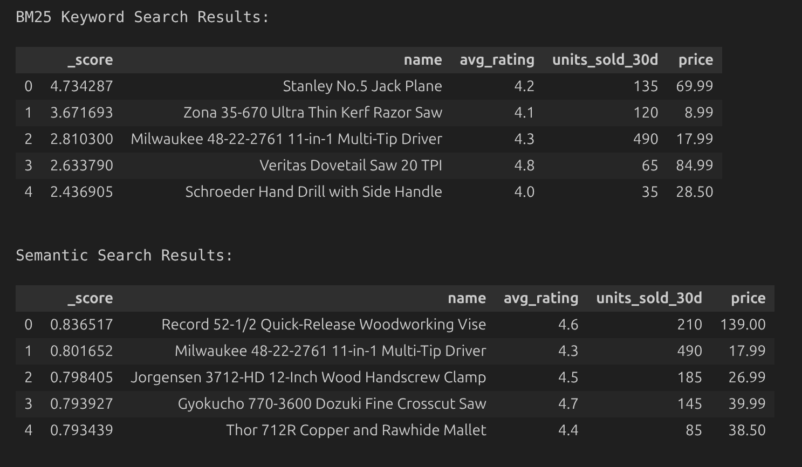
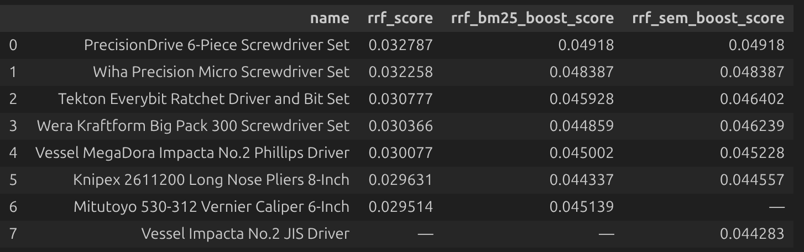
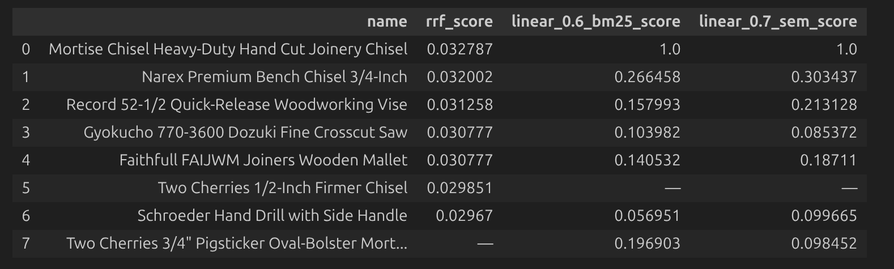
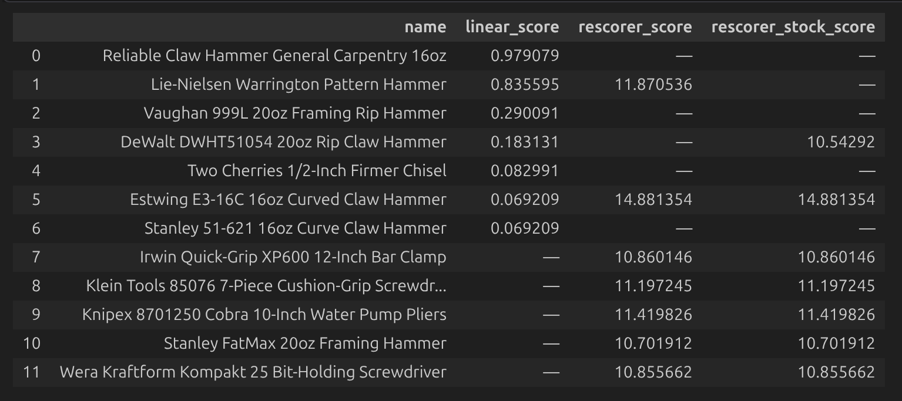

What We'll Cover
- Lexical vs semantic search — why neither alone is enough
- RRF Retriever — rank-based fusion (weighted & unweighted)
- Linear Retriever — score-based fusion with MinMax normalization
- Rescorer Retriever — injecting business logic after fusion
- Decision framework — when to use each approach
Architecture

- Elastic Serverless provisioned via Terraform
- Product catalog indexed with dual fields — BM25 text + Jina v5 semantic embeddings
- Hybrid retrieval scenarios demonstrate RRF, Linear, and Rescorer strategies
The Dataset
80 Hand Tools
- 8 categories — hammers, screwdrivers, chisels, clamps, saws, measuring, wrenches, drills
- Each product has business signals: avg_rating, units_sold_30d, in_stock
- Realistic product descriptions with natural language variation
"Trap" Products
- Keyword-stuffed items that game BM25 and semantic search
- Semantically rich items invisible to keyword matching
- High-relevance / low-business-signal items to test rescoring
Baseline: Lexical vs Semantic
Query: "versatile fastening tool for woodworking joints"

BM25 (Lexical)
Rewards exact keyword overlap — "fastening" and "woodworking" score well
Semantic
Surfaces conceptually relevant products even without query keywords
RRF Retriever — Rank-Based Fusion
Merges ranked lists from multiple retrievers using rank positions only
How It Works
- Each retriever returns a ranked list
- RRF converts ranks to scores using a constant k (default 60)
- Scores are summed across retrievers
- Weights can boost one retriever's contribution
Key Limitation
- A weak #1 and a dominant #1 get the same score
- Score magnitude is invisible — only position matters
- Cannot distinguish genuine relevance from keyword gaming
RRF Results
Query: "precision screwdriver for electronics repair"

- Trap A1 (keyword-stuffed "PrecisionDrive") holds #1 across all three RRF variants
- Trap A2 (semantically rich "Vessel Impacta") only surfaces when semantic is boosted — dead last at #7
- Wiha (genuinely relevant) is stuck at #2 — can never overtake the keyword-stuffed item
Takeaway: Hybrid search does not automatically neutralize keyword stuffing
Linear Retriever — Score-Based Fusion
Combines actual score values instead of ranks, with MinMax normalization
How It Works
- Scores from each retriever are normalized to 0–1 using MinMax
- Normalized scores are multiplied by configurable weights
- Weighted scores are summed for final ranking
Why It Matters
- A product scoring 52 on BM25 vs next-best at 11 — Linear sees that 5x gap
- RRF flattens it to rank 1 vs rank 2
- Weight tuning has real impact — shifting BM25↔semantic changes which products surface
Linear Results
Query: "mortise chisel for hand-cut joinery"

- Mortise Chisel Heavy-Duty scores 1.0 in both Linear columns — MinMax ceiling reflects true dominance
- Two Cherries Pigsticker appears in Linear but not RRF — score awareness surfaces it
- Shifting BM25-heavy → semantic-heavy collapses Pigsticker's score by half — exposing keyword-only relevance
Takeaway: Linear sees score magnitude, but has no awareness of business signals
Rescorer Retriever — Business Logic Layer
Wraps a first-stage retriever and re-ranks results using business signals
How It Works
- First stage (Linear) retrieves candidates based on text relevance
- Rescorer applies a script score that blends relevance with business signals
- Signals can include: ratings, sales velocity, stock status, margin, recency
Key Capability
- A single boolean (in_stock: false) can override all relevance and popularity signals
- Low-relevance products with strong business signals can be promoted
- High-relevance products with poor signals can be demoted
Rescorer Results
Query: "reliable claw hammer for general carpentry"

- Reliable Claw Hammer — Linear #1 (0.98) → drops out entirely. Rating 1.9, only 14 units sold
- Estwing E3-16C — Linear #7 (0.07) → Rescorer #1 (14.88). Rating 4.9, 1840 units sold
- Lie-Nielsen — Rescorer #2 (11.87) → disappears with stock filter. in_stock: false
Takeaway: One boolean field overrides all relevance and popularity signals
When to Use Each Retriever
| Retriever | Fusion Method | Score Magnitude? | Weights? | Business Logic? |
|---|---|---|---|---|
| RRF (unweighted) | Rank-based | No | No | No |
| RRF (weighted) | Rank-based | No | Yes | No |
| Linear + MinMax | Score-based | Yes | Yes | No |
| Rescorer | Score-based + rerank | Yes | Yes | Yes |
- RRF — zero-tuning starting point; good when you don't know which signal matters more
- Linear — when score magnitude matters; products that are dramatically more relevant should rank dramatically higher
- Rescorer — when business logic must influence final rankings (popularity, stock, margin)
Key Takeaways
- Hybrid search ≠ automatic quality — rank fusion alone does not neutralize keyword stuffing or gaming
- Score magnitude matters — Linear's score-based fusion preserves relevance gaps that RRF flattens into rank positions
- Business logic is the final layer — the Rescorer separates retrieval from ranking, letting business constraints override pure text relevance
- Each retriever builds on the last — start with RRF, graduate to Linear when you need precision, add Rescorer when business signals matter
Resources
- Source Code — github.com/joeywhelan/beyond-rrf
- RRF Retriever — elastic.co/docs/reference/elasticsearch/rest-apis/retrievers/rrf-retriever
- Linear Retriever — elastic.co/docs/reference/elasticsearch/rest-apis/retrievers/linear-retriever
- Rescorer Retriever — elastic.co/docs/reference/elasticsearch/rest-apis/retrievers/rescorer-retriever
- Elastic Serverless — elastic.co/cloud/serverless